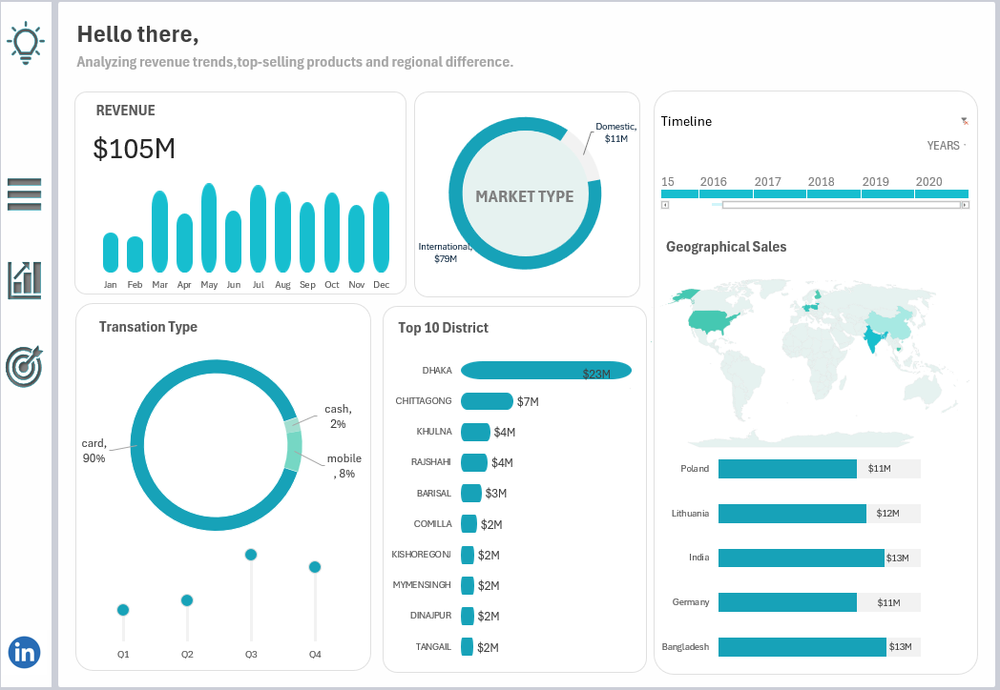

Excel Analytics Portfolio
A collection of Excel dashboards and data analysis projects focused on delivering actionable business insights. GitHub links provide code and summaries, while Medium links offer full analysis and storytelling.



A collection of Excel dashboards and data analysis projects focused on delivering actionable business insights. GitHub links provide code and summaries, while Medium links offer full analysis and storytelling.
